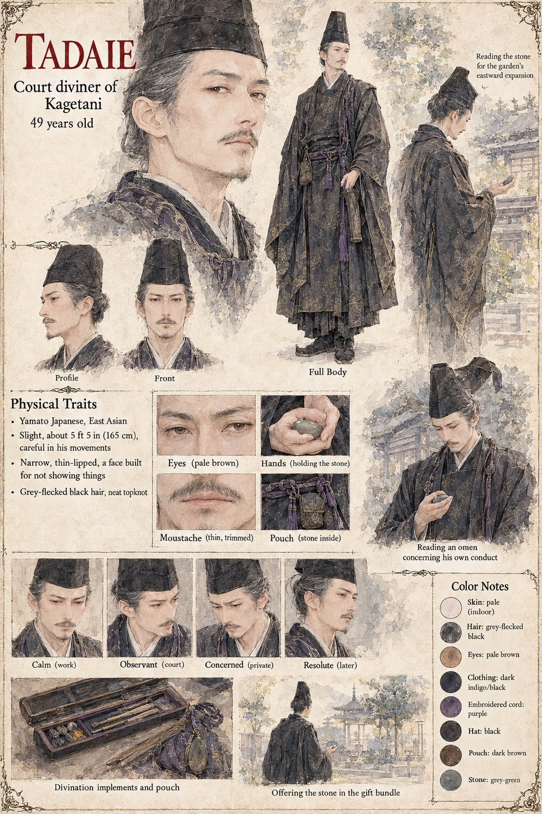

Tadaie
Court diviner of Kagetani · accepts the stone from the wandering monk · keeps it in a pouch at his belt · 49 by his sheet
The court diviner of Kagetani, careful and methodical. On the ninth of Iverin a wandering monk (the Observer) asks for a night’s floor space and a bowl of rice at his lodging and leaves behind a small grey stone, which Tadaie accepts. The pack’s Prompt 2 draws him already half-forgetting the monk’s face.
He holds the stone while he reads the omens that favour the eastward expansion of the garden, and Moritane holds it for a moment during the reading and says yes. He offers it up in the gift bundle Sadatomo arranges for Jakuen-ji, the one that carries it on to Ennen. Later he reads an omen concerning his own conduct and does not revise the answer.
His age and the way he looks are the pack’s: the manuscript says only that he is careful and keeps the stone in a pouch. The sheet makes him slight, about 5 ft 5 in (165 cm), with a narrow, thin-lipped face and a thin trimmed moustache, grey-flecked black hair in a neat topknot under a tall black cap, pale watchful brown eyes, pale indoor skin, and a dark diviner’s robe with gold patterning and a purple cord. Its expression panels are Calm (work), Observant (court), Concerned (private) and Resolute (later). Its scenes are a full body; a back view captioned Reading the stone for the garden’s eastward expansion; Reading an omen concerning his own conduct, head bowed over the stone in his hand; his divination implements and pouch; and Offering the stone in the gift bundle.